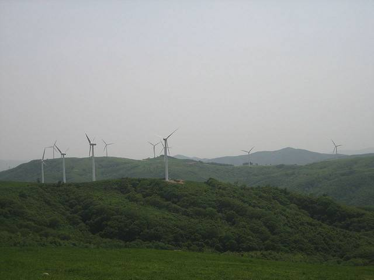
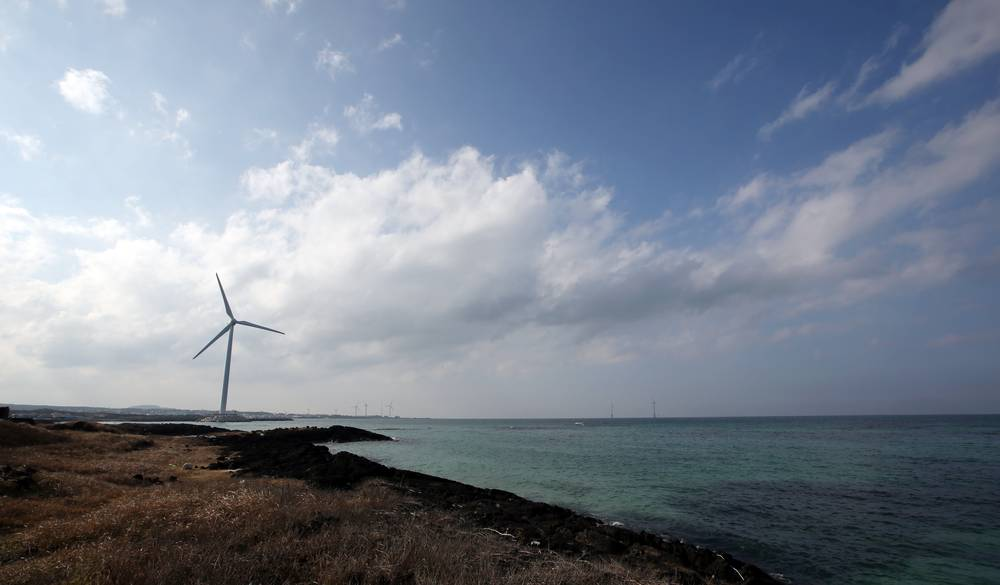

금융
산중위 예산안 의결 두 번째 연기…미래대응기금 지방교부세 산정 방식 쟁점으로
국민의힘 중복 편성·기금 소멸 뒤 대책 질의 / 더불어민주당 국가채무비율 들어 반박…법정 시한 12월 2일

철원·화천 군의원, 접경지역 정책포럼서 영농형 태양광 군민펀드 제안
철원 농지 약 60% 외지인 소유 우려…화천은 군 유휴 추정부지 약 1,087만㎡ 활용 특례 확대 제안

남호주 아파트에도 공동 태양광·배터리, 설치비 절반 보조에 나머지는 무이자 융자
연방·주정부 1,780만 호주달러 투입, 건물 한 곳당 보조금·융자 각 최대 4만7,500 호주달러, 남호주 주민 12명 중 1명이 구분 소유 건물 거주


국회 정무위, 17일 금융법안 심사 재개…해킹 과징금·워크아웃법 연장 연내 처리 주목
여야, 소위 안건 협의 중…예금자보호법 특별계정 1년 연장·청년 보금자리론 위한 주금공법도 대기

제주 이창흠 초대 기후경제부지사 "풍력·햇빛 이익을 도민 소득으로"…주민참여형 사업을 도민펀드로 넓힌다
2035년 탄소중립 목표, 약 2GW 추자해상풍력 최우선…신규 발전사업 주민 채권·펀드 투자, 공유화기금은 취약계층·공동체 재원

예산소위 앞두고 여야 '미래대응기금' 공방…국힘 "정부 쌈짓돈, 전면 백지화" 민주 "삭감 외치며 지역구 사업은 증액 요구"
초과세수를 별도 기금으로 운용하는 정부안 놓고 국회 예산통제 권한 논쟁

울산 750MW 부유식 해상풍력 '문무바람' 모회사, 25일 청산 여부 주총…자금 확보가 관건
스웨덴 헥시콘, 이사회는 존속 제안했지만 '운영자금 조달 중대한 불확실성' 명시…감사인은 의견 내지 않아

독일 바이에른 이젠 시민풍력조합, 조합원 470명·출자금 80만 유로 모아…"착공은 몇 년 뒤, 지금은 준비 단계"
'시민에너지 이젠탈' 경험 나눔 행사…풍력 7기 주민 소유 푹스탈 전 군수 "돈이 마을에 남는다"

162조 미래대응기금 8개 사업 4조3,472억 원, 정부는 '신규'·국회 보고서는 '계속'…예산 심사 쟁점으로
청년일자리도약장려금 9,012억 원 중 70.1%는 옛 채용자 잔여분…기획예산처 "확대 개편으로 기금 차원 신규"

산자위, 반도체·미래대응기금 이견에 내년 예산안 의결 못 하고 정회
국민의힘 "서남권 반도체 1조5,000억 원 전액 삭감" vs 민주당 "4조5,000억 원 늘려 6조 원"

수원햇빛발전㈜ 밑그림 나왔다…공영주차장 13곳 5MW부터 20MW·328억 원, 공공 배당은 기후대응기금으로
수원시·수원도시공사·에너지협동조합 참여, 시민펀드로 이익 나눠…16일 수원시의회서 창립설명회

캐나다 캘거리 전기·가스 판매사, 이익 100%를 지역 성소수자 단체에…"요금이 공동체 기금이 된다"
사회적기업 Q-TILITIES, 대표는 월급 안 받고 5년 안에 10만 달러 이상 환원 목표

독일 조합원 4만2,000명 에너지협동조합 프로콘에 통신사도 출자…지분 1,266좌·6만3,300유로, "배당도 다시 출자"
아미바 운영사 STROTH Telecom 조합원 가입…"지분 수와 관계없이 1인 1표 민주적 구조에 끌렸다"

강원도 108억 원 현물출자한 대관령 풍력단지, 연 순이익 3억 원 그쳐…도의회 행감서 "경제성·주민 피해 다시 따져야"
강원개발공사 운영 단지 예상 매출 21억 원…유지보수·인건비 오르면 수익 더 줄 수도, 소음·저주파·그림자 깜박임 등 사회적 비용도 거론

눈의 고장 일본 나가오카에서 시민 65명이 '시민공동발전소'…출자금으로 지붕·농지 위 태양광, 수익은 출자자에게
2023년 설립한 일반사단법인 '나가오카 자연에너지', 학교 출장수업·소수력 체험도…"연간 일사량 간토의 약 80%"

스코틀랜드 송전망 회사 500만 파운드 '넷제로 기금', 주민 주도 사업 26곳 지원 마쳐…"1파운드 넣어 사회적 가치 2.85파운드"
SP에너지네트웍스 기금, 중부·남부 공동체 건물 단열·저탄소 난방·친환경 교통 지원…워크숍 32회 450여 명, 22곳 전문 자문, 이산화탄소 2만5,000톤 넘게 줄여

공공이 앞장선 제주·나주의 에너지 전환…풍력 공유화기금·나주형 햇빛연금으로 이익 나눴지만 전력망 포화가 숙제
제주에너지공사 풍력 59.53MW 운영·한림해상풍력 주민 1,009명 1인당 연 351만 원…나주 허가받고 못 짓는 태양광 약 2,700곳

스코틀랜드 SSEN 트랜스미션, 송전설비 인근 주민에게 162만 파운드 지역기금 설계 의견 묻는다
레어그·로가트 주민 대상 설문 11월 16일~12월 14일, 설명회 3회…'사우스 로크신 지역기금'은 2027년 문 열 예정

영국 내셔널그리드, 블라이스 변전소 증설 지역에 최대 106만 파운드 공동체 기금…쓰임새는 주민 의견 받아 정한다
데이터센터·버윅뱅크 해상풍력 연결용 변전소 1·2단계에 53만 파운드씩, 12월 6일까지 4주간 의견 수렴…기금은 내년 여름 출범

용인시정연구원 "반도체 RE100 수요를 시민 소득으로"…시민 투자·주민 참여·공공자산 태양광 담은 이익공유 모델 제안
이슈리포트 'YRI Insight 119호'…발전 수익 공유, 시공·유지관리 주민 참여, 정책금융·시민투자 연계, 인접 시군과 광역 협력 등 5가지 방안

신협, 시민 태양광에서 해상풍력·햇빛소득마을까지 재생에너지 금융 넓힌다…마을 발전시설 자금 최대 85% 대출
안산시민햇빛발전협동조합 발전소 60곳 짓는 데 힘 보탠 경험 살려 고창 해상풍력 1,000억 원 연계대출 참여, 에너지공단 이차보전으로 마을 이자 부담 덜어

호주 연구진 "재생에너지 지역 혜택, 반짝 지원 말고 오래 남는 유산으로"…지역기금 2030년 2억1,300만 호주달러 전망
시드니공과대 분석 "지역 고용 효과 아직 뚜렷하지 않아"…원주민 지분·수익 5% 공유 입찰, 지역 훈련, 영농형 태양광 계획 인정 제안

일본 사가시, 시가 52% 출자한 지역 전력회사 세워…청소공장 전기를 공공시설 113곳에 직접 판다
자본금 5,000만 엔 중 시 2,600만 엔·민간 6개사 400만 엔씩…연 약 1만6,000MWh 판매, 시 밖으로 새던 전기요금 지역에 남긴다

金融
南オーストラリアの集合住宅にも共同の太陽光・蓄電池、設置費の半分を補助し残りは無利子融資
連邦・州政府が1,780万豪ドルを投入、1棟あたり補助金・融資とも最大4万7,500豪ドル、南オーストラリアは住民12人に1人が区分所有の建物に居住
済州のイ・チャンフム初代気候経済副知事「風と日差しの利益を道民の所得に」…住民参加型事業を道民ファンドへ拡大
2035年炭素中立目標、約2GWの楸子洋上風力を最優先…新規発電事業に住民が債券・ファンドで投資、共有化基金は脆弱層・共同体の財源に
蔚山の750MW浮体式洋上風力「文武バラム」の親会社、25日に清算可否の株主総会…資金確保がカギ
スウェーデンのヘキシコン、取締役会は存続を提案も「運転資金調達に重大な不確実性」と明記…監査人は意見を表明せず
独バイエルン州イーゼンの市民風力協同組合、組合員470人・出資金80万ユーロ…「着工は数年後、今は準備段階」
「市民エネルギー・イーゼンタール」が経験共有イベント…住民所有の風車7基を運営するフクスタールの元村長「お金が村に残る」
「水原ひだまり発電」の青写真…公営駐車場13カ所5MWから20MW・328億ウォン、公共の配当は気候対応基金に
水原市・水原都市公社・エネルギー協同組合が参加、市民ファンドで利益分配…16日に市議会で設立説明会
カナダ・カルガリーの電気・ガス小売会社、利益の100％を地域の性的少数者団体へ…「料金が共同体の基金に」
社会的企業Q-TILITIES、代表は無給で5年以内に10万ドル以上の還元目標
ドイツの組合員4万2,000人のエネルギー協同組合プロコンに通信会社も出資…1,266口・6万3,300ユーロ、「配当も再出資」
アミバ運営のSTROTH Telecomが組合員に…「持分数に関係なく1人1票の民主的な仕組みにひかれた」
江原道が108億ウォンを現物出資した大関嶺風力団地、年間純利益3億ウォンにとどまる…道議会の監査で「経済性と住民被害を改めて検証せよ」
江原開発公社が運営する団地の予想売上は21億ウォン…維持補修費や人件費が上がれば収益はさらに減る恐れ、騒音・低周波・シャドーフリッカーなど社会的費用も指摘
雪国・長岡で市民65人が「市民共同発電所」…出資金で屋根や農地の上に太陽光、収益は出資者へ
2023年設立の一般社団法人「ながおか自然エネルギー」、学校への出前授業や小水力体験も…「年間日射量は関東の約8割」
スコットランドの送電会社による500万ポンドの「ネットゼロ基金」、住民主導の26事業の支援を完了…「1ポンドで社会的価値2.85ポンド」
SPエナジー・ネットワークスの基金、中部・南部のコミュニティ建物の断熱・低炭素暖房・環境配慮型交通を支援…ワークショップ32回に450人超、22団体に専門助言、CO2を2万5,000トン以上削減
公共が先導する済州・羅州のエネルギー転換…風力共有化基金・羅州型太陽光年金で利益を分け合うも電力網の飽和が課題
済州エネルギー公社が風力59.53MWを運営・翰林洋上風力では住民1,009人が1人年351万ウォン…羅州では許可を得ても建てられない太陽光約2,700カ所
スコットランドのSSENトランスミッション、送電設備近くの住民に162万ポンドの地域基金の設計について意見を求める
レアーグ・ロガート住民対象のアンケートは11月16日〜12月14日、説明会3回…「サウス・ロッホ・シン地域基金」は2027年開始予定
英ナショナル・グリッド、ブライス変電所の増設地域に最大106万ポンドのコミュニティー基金…使い道は住民の意見を聞いて決める
データセンターとバーウィック・バンク洋上風力をつなぐ変電所の第1・2段階に53万ポンドずつ、12月6日まで4週間の意見募集…基金は来年夏に始動
龍仁市政研究院「半導体のRE100需要を市民の所得に」…市民投資・住民参加・公共資産太陽光を盛り込んだ利益共有モデルを提案
イシューリポート「YRI Insight 119号」…発電収益の共有、施工・保守への住民参加、政策金融と市民投資の連携、隣接市郡との広域協力など5つの方策
韓国の信用協同組合「信協」、市民太陽光から洋上風力・「日差し所得村」まで再エネ金融を拡大…村の発電施設資金を最大85％融資
安山市民太陽光発電協同組合の発電所60カ所建設を支えた経験を生かし、高敞洋上風力に1,000億ウォンの連携融資、エネルギー公団の利子補給で村の負担軽減
豪研究者「再エネの地域便益は一時的な支援でなく長く残る遺産に」…地域基金は2030年に2億1,300万豪ドルの見通し
シドニー工科大学の分析「地元雇用の効果はまだはっきりしない」…先住民への持ち分・収益5％共有の入札枠、地元研修、営農型太陽光の計画上の位置づけを提案
佐賀市、市が52％出資する地域新電力を設立…清掃工場の電気を公共施設113カ所へ直接販売
資本金5,000万円のうち市が2,600万円・民間6社が400万円ずつ…年約1万6,000MWhを販売、市外に流れていた電気料金を地域に残す
金融
南澳公寓也能装共享光伏和电池，补贴一半安装费，其余提供无息贷款
联邦与州政府投入1,780万澳元，每处物业补贴与贷款各最高4万7,500澳元，南澳每12名居民中有1人住在分层产权建筑
济州首任气候经济副知事李昌钦：“让风和阳光的收益成为道民收入”…把居民参与型项目扩大为道民基金
以2035年碳中和为目标，优先推进约2吉瓦楸子海上风电…新发电项目由居民以债券、基金投资，共享基金用于弱势群体和社区
德国巴伐利亚伊森市民风电合作社：成员470人、出资80万欧元…"开工还要几年，现在是准备阶段"
"伊森塔尔市民能源"举办经验分享会…运营7台居民所有风机的富克斯塔尔前镇长："钱留在村里"
“水原阳光发电”蓝图出炉…从13处公营停车场5MW起步，规模20MW、328亿韩元，公共分红纳入气候应对基金
水原市、水原城市公社与能源合作社参与，以市民基金分享收益…16日在市议会举行创立说明会
德国拥有4.2万名社员的能源合作社Prokon迎来电信企业入股…1,266股、6.33万欧元，“分红也继续入股”
Amiva运营商STROTH Telecom成为社员…“看重不论股数多少一人一票的民主结构”
江原道以108亿韩元实物出资的大关岭风电场年净利润仅3亿韩元…道议会监察："重新审视经济性和居民受害"
江原开发公社运营的风电场预计年销售额21亿韩元…维修费和人工成本上涨可能进一步压缩利润，噪音、低频、阴影闪烁等社会成本也被提及
日本雪国长冈65名市民建“市民共同发电所”…以出资在屋顶和农田上方装太阳能，收益回馈出资者
2023年成立的一般社团法人“长冈自然能源”，还到学校上课、开展小水电体验…“年日照量约为关东的80%”
苏格兰输电公司500万英镑"净零基金"完成资助26个社区主导项目…"每投入1英镑产生2.85英镑社会价值"
SP能源网络基金支持中部和南部社区建筑保温、低碳供暖和绿色交通…32场研讨会450余人参加，22个团体获专业咨询，减排二氧化碳逾2.5万吨
公共部门引领的济州、罗州能源转型：以风电共有化基金和罗州型阳光年金分享收益，但电网饱和成难题
济州能源公社运营风电59.53MW，翰林海上风电1,009名居民人均年获351万韩元；罗州获许可却无法开工的光伏约2,700处
苏格兰SSEN输电公司就162万英镑地方基金设计征求输电设施附近居民意见
面向莱格、罗加特居民的问卷11月16日至12月14日开放，另有3场说明会…“南欣湖地方基金”预计2027年启动
英国国家电网为布莱斯变电站扩建地区设立最高106万英镑社区基金，用途听取居民意见后决定
连接数据中心和伯威克滩海上风电的变电站一、二期各分配53万英镑，征求意见4周至12月6日，基金明年夏季启动
龙仁市政研究院：“把半导体RE100需求转化为市民收入”…提出包含市民投资、居民参与和公共资产光伏的利益共享模式
专题报告《YRI Insight 第119期》…提出发电收益共享、居民参与施工与运维、政策性金融与市民投资联动、与邻近市郡广域合作等5项方案
韩国信用合作社“信协”将可再生能源金融从市民光伏扩展至海上风电和“阳光收入村”…村级发电设施资金最高可贷85%
凭借支持安山市民阳光发电合作社建成60座电站的经验，参与高敞海上风电1,000亿韩元联合贷款，能源公团贴息减轻村庄利息负担
澳大利亚研究人员："可再生能源的地方收益应是持久遗产而非一时甜头"…社区基金2030年预计达2亿1,300万澳元
悉尼科技大学分析称"本地就业效果尚不明显"…建议原住民股权与收益5%共享招标、本地培训，并在规划中承认农光互补
日本佐贺市成立市政府出资52%的地方电力公司…将清扫工厂电力直接售给113处公共设施
注册资本5,000万日元中市政府出资2,600万日元、6家民企各400万日元…年售电约1万6,000兆瓦时，把流向市外的电费留在本地
Finance
Cheorwon and Hwacheon county councillors propose an agrivoltaic residents' fund at border-region policy forum
Concern that about 60% of Cheorwon farmland is owned by outsiders; Hwacheon councillor proposes wider use of about 10.87 million sq. m of presumed idle military land
Shared solar and batteries reach South Australian apartments, with half the cost in grants and the rest in zero-interest loans
Federal and state governments commit A$17.8 million; grants and loans are each capped at A$47,500 per building; one in 12 South Australians lives in strata
Korea's public finance put $27.7 billion into overseas fossil fuels, 4.8 times its climate finance
2018-2022 figures: Green Climate Fund payment rate 23.3%, 34th of 35 pledgers
Jeju's first climate-economy vice governor: 'Turn wind and sun into residents' income' with a province-wide citizens' fund
Aiming for carbon neutrality by 2035 with the ~2 GW Chuja offshore wind farm as top priority; residents to invest via bonds and funds, shared fund to support vulnerable households and communities
Parent of Ulsan's 750 MW floating offshore wind project Munmu Baram to vote on liquidation on the 25th; funding is key
Sweden's Hexicon board proposes continuing but cites 'material uncertainty' over working capital; auditor declines to give an opinion
Bavarian village wind cooperative in Isen reaches 470 members and €800,000: 'Construction is years away; we are preparing'
Bürgerenergie Isental hosts experience evening; former Fuchstal mayor, whose community runs seven citizen-owned turbines, says 'the money stays in the village'
Suwon Haetbit Power takes shape: 5MW on 13 public car parks first, 20MW and 32.8 billion won in total, with public dividends going to a climate fund
City, Suwon Urban Corporation and energy co-ops join; citizens share profits through a fund — founding briefing at city council on Nov. 16
Calgary power and gas retailer gives 100% of profits to local LGBTQ+ groups: 'bills become a community fund'
Social enterprise Q-TILITIES: founder takes no salary and aims to give back at least $100,000 within five years
Telecom firm joins German energy co-op Prokon, which has 42,000 members, with 1,266 shares worth €63,300
STROTH Telecom, the company behind Amiva, says the one-member-one-vote model won it over and will reinvest dividends
Daegwallyeong Wind Farm, Backed by 10.8 Billion Won of Gangwon Province Assets, Earns Only 300 Million Won a Year; Provincial Councillors Call for Review of Economics and Harm to Residents
The farm run by Gangwon Development Corporation expects 2.1 billion won in annual revenue; rising maintenance and labour costs could cut profit further, and noise, low-frequency sound and shadow flicker were raised as social costs
In snowy Nagaoka, 65 citizens build 'citizen co-owned power plants' with solar on roofs and farmland, returning revenue to investors
The Nagaoka Natural Energy association, founded in 2023, also runs school classes and micro-hydro demos; annual sunshine is about 80% of the Kanto region's
Scottish Grid Operator's £5 Million Net Zero Fund Completes Support for 26 Community-Led Projects, Returning £2.85 in Social Value per £1
SP Energy Networks fund backed insulation, low-carbon heating and greener transport for community buildings in central and southern Scotland; 450+ people joined 32 workshops, 22 groups got expert advice, over 25,000 tonnes of CO2 saved
Public-Led Energy Transitions in Jeju and Naju Share Gains Through a Wind Commons Fund and a 'Sunlight Pension,' but Grid Saturation Looms
Jeju Energy Corporation runs 59.53MW of wind; 1,009 residents earn about ₩3.51 million a year each from Hallim offshore wind; in Naju, some 2,700 licensed solar projects cannot be built
Scotland's SSEN Transmission Asks Residents Near Its Power Lines to Help Design a 1.62 Million Pound Local Fund
Survey for Lairg and Rogart residents runs from November 16 to December 14 with three sessions; the South Loch Shin Local Fund is due to open in 2027
National Grid Offers Up to 1.06 Million Pounds in Community Funding Around Blyth Substation Expansion, With Residents Asked How It Should Be Spent
530,000 pounds for each phase of a substation project connecting a data centre campus and the Berwick Bank offshore wind farm; four-week consultation runs to 6 December, with the fund due to launch next summer
Yongin Research Institute Proposes Turning Chipmakers' RE100 Demand Into Citizen Income Through a Profit-Sharing Model
Issue report YRI Insight No. 119 sets out five measures, including shared generation revenue, resident jobs in construction and maintenance, linking policy finance with citizen investment, and cooperation with neighbouring cities and counties
Korea's Shinhyup Credit Unions Widen Renewable Finance From Citizen Solar to Offshore Wind and 'Sunlight Income Villages', Lending Up to 85% of Village Plant Costs
Building on its support for the 60 plants of the Ansan citizens' solar cooperative, Shinhyup joins a 100 billion won syndicated loan for Gochang offshore wind, while an energy agency interest subsidy eases village borrowing costs
Australian Researchers Say Renewables Must Leave Regions "a Lasting Legacy, Not a Sugar Hit"; Community Benefit Funds Forecast to Reach A$213 Million by 2030
University of Technology Sydney analysis finds local jobs impact not yet clear; proposes First Nations equity and 5% revenue-sharing tenders, local training and planning recognition for agrivoltaics
Japan's Saga City Sets Up Local Power Company With 52% Municipal Stake to Sell Waste-Plant Electricity Directly to 113 Public Facilities
Of ¥50 million in capital, the city put in ¥26 million and six private firms ¥4 million each; about 16,000 MWh a year to be sold, keeping power bills that used to leave the city in the local economy